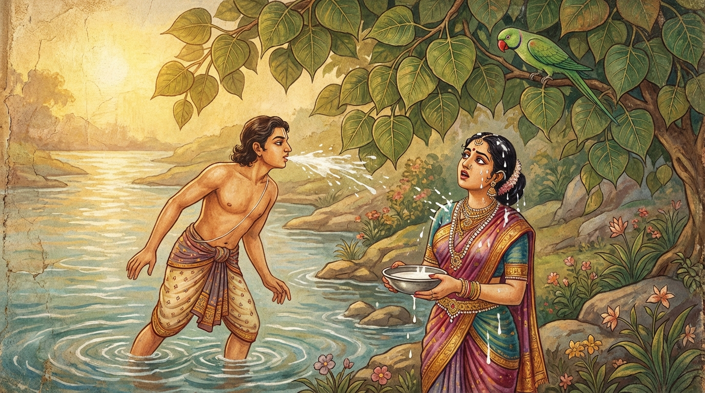

7. කලණ්ඩුක ජාතකය (127)
“තෙ දෙසා තානි වත්ථූනි” යන මේ දේශනාව බුදුරජාණන් වහන්සේ ජේතවනාරාමයෙහි වැඩවසන සමයෙහි තමා ගැන පුරසාරම් දොඩන භික්ෂුවක් අරබයා වදාළ සේක. මෙහි වර්තමාන හා අතීත කථා වස්තු දෙකම කටාහක ජාතකයට සමානමය.
මෙහි කථාව මෙසේය: බරණැස් සිටුතුමාට ‘කලණ්ඩුක’ නම් දාසයෙක් විය. ඔහු පලා ගොස් දේශසීමාවේ සිටුවරයෙකුගේ දියණියක සරණ පාවාගෙන මහත් පිරිවර සහිතව වෙසෙන කල්හි, බරණැස් සිටුතුමා ඔහු සොයවූ නමුත් ඔහු ගිය තැනක් නොදැන, “යව, කලණ්ඩුකව සොයා බලව” යි තමා විසින් ඇති දැඩි කරන ලද ගිරා පෝතකයෙකු යැවීය. ගිරා පෝතකයා ඔබමොබ හැසිරෙමින් ඒ නගරයට ළඟා විය. එකල කලණ්ඩුක දියකෙළි කිරීමට කැමතිව, බොහෝ මල්, ගන්ධ, විලවුන් ද, කෑම් බීම් ද ගෙන්වාගෙන ගඟට ගොස් සිටු දියණිය සමඟ නැවකට නැගී ජලයෙහි ක්රීඩා කරයි. ඒ ප්රදේශයේ දියකෙළි කරන ඉසුරුමත් උදවිය (ශීතලට ඔරොත්තු දීම සඳහා) සැර බෙහෙත් මුසු කරන ලද කිරි පානය කරති. ඒ නිසා ඔවුන්ට වරුවක් වුව ද ජලයේ ක්රීඩා කරන විට ශීතලෙන් පීඩාවක් ඇති නොවේ. මේ කලණ්ඩුකයා ද කිරි උගුරක් ගෙන කට සෝදා ඒ කිරි දියට නොගසා සිටු දියණියගේ හිස මතට කෙළ ගසයි. ගිරා පෝතකයා ද ගං ඉවුරට ගොස් එක් තිඹිරි ගසක අත්තක හිඳ බලා සිටින විට කලණ්ඩුකව හඳුනාගෙන, ඔහු සිටු දියණියගේ හිසට කෙළ ගසනු දැක, “එම්බල කලණ්ඩුක දාසය, තමාගේ ජාතියත් වසන තැනත් සිහි කරව. කිරි උගුරක් ගෙන කට සෝදා, උසස් ජාතියක් ඇති සැප සේ වැඩුණු සිටු දියණියගේ හිසට කෙළ නොගසව. තෝ තමාගේ තරම නොදන්නෙහිදැ” යි පවසා මේ ගාථාව කීවේය.

“(තා උපන් මව් කුස නම් වූ) දේශය ද, (මව් ගැබ නම් වූ) වස්තුව ද, වනචාරී වූ මම ද දනිමි. (ස්වාමිවරුන්) තා ගැන විමසා දැන අල්ලා ගනු ඇත. එබැවින් කලණ්ඩුකය, (කට වසාගෙන) කිරි බොව.”
එහි “තෙ දෙසා තානි වත්ථූනි” යන්නෙන් මව් කුස ගැන සඳහන් කරයි. මෙහි අදහස මෙයයි: “යම් තැනක තෝ විසුවේ නම්, ඒවා ක්ෂත්රිය දියණියන්ට සුදුසු කුස ප්රදේශ නොවේ. යම් තැනක තෝ පිහිටියේ නම්, ඒවා ක්ෂත්රිය දියණියන්ට සුදුසු කුස වස්තු නොවේ. එසේ වුවද තෝ දාසියකගේ කුසෙහි විසුවෙහිය; පිහිටියෙහිය.” “අහඤ්ච වනගොචරො” යනු “තිරිසන් සතෙකු වුවත් මම මේ කාරණය දනිමි” යි දැක්වීමයි. “අනුවිච්ච ඛො තං ගණ්හෙය්යුං” යනු “මෙසේ නොසිරිතෙහි හැසිරෙන බව මා ගොස් (ස්වාමිවරුන්ට) පැවසූ කල, ඒ ගැන පරීක්ෂා කර දැනගෙන, තාගේ හිමිකරුවන් තට තලා පෙළා, දාස ලකුණු තබා තාව අල්ලා ගනු ඇත; අල්ලාගෙන යනු ඇත. එබැවින් තමාගේ තරම දැන, සිටු දියණියගේ හිසට කෙළ නොගසා කිරි බොව.” “කලණ්ඩුකා” යනු ඔහු නමින් ඇමතීමයි.
කලණ්ඩුක ද ගිරා පෝතකයා හඳුනාගෙන, “මොහු මා ප්රසිද්ධ කරාවි” යැයි බියට පත්ව, “එන්න ස්වාමීනි, ඔබ පැමිණියේ කවදාදැ” යි ඇසීය. ගිරවා, “මොහු මා කෙරෙහි හිතවත්කමින් අඬගසනවා නොවේ; මගේ ගෙල මිරිකා මරා දැමීමට කැමැත්තෙන් සිටී” යයි දැන, “මට ඔබෙන් කම් නැතැ” යි කියා එතැනින් අහසට පැන නැගී බරණැස් නුවරට ගොස් තමා දුටු සියල්ල විස්තර වශයෙන් සිටුතුමාට කීවේය. සිටුතුමා, “ඔහු නුසුදුසු දෙයක් කළේය” යි පවසා, එහි ගොස් ඔහුට දඬුවම් කරවා බරණැස් නුවරටම ගෙන්වාගෙන දාසයෙකු ලෙසින්ම වැඩ ගත්තේය.
බුදුරජාණන් වහන්සේ මේ ධර්ම දේශනාව ගෙනහැර දක්වා ජාතකය ගළපා වදාළ සේක. “එකල කලණ්ඩුක වූයේ මේ භික්ෂුවයි. බරණැස් සිටුතුමා වූයේ මම ම වෙමි.”
කලණ්ඩුක ජාතක වර්ණනාවයි.